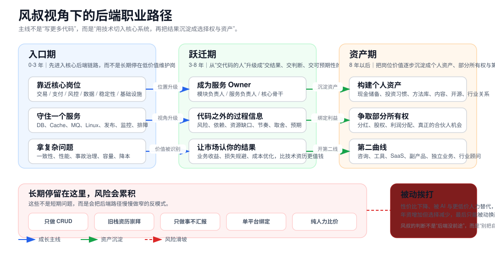

后端值得做，但只值得当入口
风叔并不否认程序员的价值，相反，他明确承认这类岗位对普通人最大的意义是变现快、路径清晰、能较快解决财务起步问题。 但他也反复强调，真正长久的不是岗位，而是人本身的谋划。翻译成后端语言，就是：别把自己规划成“做一辈子开发”，而是把后端当作进入更大牌桌的起点。
这页不是把“后端程序员怎么升职加薪”再讲一遍，而是把风叔关于程序员、职业寿命、资产、向上管理、行业周期和合伙人逻辑的文章重新编排后，翻译成一条更适合后端工程师执行的路线。 核心结论只有一句：后端是入口，不是终点；代码是筹码，不是归宿。
把风叔散落在不同文章里的判断压缩成一张职业路径图，方便先看结构，再看细节。

这张图的关键不是“从左往右升职”，而是“把后端工作逐渐从纯劳动变成复利结构”。入口期解决的是位置问题，跃迁期解决的是市场识别问题，资产期解决的是选择权问题。
下面这些判断来自多篇文章交叉归纳，不是单篇文章的孤立表述。
风叔并不否认程序员的价值，相反，他明确承认这类岗位对普通人最大的意义是变现快、路径清晰、能较快解决财务起步问题。 但他也反复强调，真正长久的不是岗位，而是人本身的谋划。翻译成后端语言，就是：别把自己规划成“做一辈子开发”，而是把后端当作进入更大牌桌的起点。
资历深、懂得多、会很多旧技术，并不天然意味着值钱。风叔对“45 岁程序员精通很多技术却难找工作”的解读非常明确：市场不在乎你精通什么，市场只在乎你来了以后能帮它避免什么损失、创造什么收益、降低什么成本。
他对“中年危机”的定义非常一致：多年只停在一个固定功能位，行业一变、技术一变、组织一缩，岗位可替代性就迅速上升。后端如果长期停在边缘维护、纯 CRUD、简单需求搬运，年资越高，议价权未必越高。
风叔在很多文章里都把“资产”放在“职业”前面。他的意思不是让人立刻辞职创业，而是提醒你：工作提供现金流，资产提供选择权。对后端来说，资产可以是现金储备、投资习惯、可复用方法库、技术影响力、股权机会，也可以是能跑起来的小工具和副产品。
如果把风叔的判断翻译成更实用的路线，后端大致应该经历这三段。
这部分是把文章里的判断翻译成更像决策清单的形式。
| 岗位选择 | 优先去核心链路、复杂系统、强业务约束环境。 | 不要长期待在纯维护、弱约束、替代性极高的边缘岗。 |
|---|---|---|
| 能力投资 | 优先投资能提升结果杠杆的能力，如稳定性、一致性、成本治理、架构演进。 | 不要把大量精力押在生命周期已经变短、市场认可度下降的旧资历崇拜上。 |
| 职场表现 | 既交代码，也交判断、节奏、风险和预期，让上层放心把事交给你。 | 不要长期做“埋头干活但不可见”的高产工具人。 |
| 长期筹码 | 同步积累现金流、投资习惯、方法库、影响力和部分所有权。 | 不要把全部希望压在单一公司、单一岗位、单一工资带来的上涨上。 |
这些坑并不是一踩就炸，而是会慢慢把路径做窄，最后在组织收缩或技术切换时集中爆发。
CRUD 本身不是问题，问题在于长期只做简单需求搬运。风叔的逻辑很直白：如果你的主要价值只是把工单搬完，那你最终会被更低价的人力或更高效的工具替代。
风叔对“精通旧栈”的怀疑一以贯之。技术周期、产品周期、组织需求都会变化。问题不在于你会不会旧技术，而在于旧技术是否还对应当下可付费的问题。
他对向上管理的阐述很强硬，但核心点并不复杂：上层需要的不只是结果，还需要可预期性。后端如果不说清楚风险、依赖、节奏和边界，就容易永远停在“工具”层。
风叔的长期判断是，打工不会消失，但如果打工被当成终局，后面会越来越难。AI 时代尤其如此，因为纯执行型岗位最先被迫参与价格战。
这不是唯一方案，但它比较接近风叔那套观点在现实里的保守执行版。
下列文章不是简单堆砌，而是分别承担了不同的判断支点。
给了整页最核心的上位原则：个人资产比职业履历更重要，路线不能越走越窄。
明确了他对职业阶段的理解，也说明从研发走向市场、管理和更高位视角并非背叛技术，而是顺着时间窗口做切换。
这篇把“越老越不值钱”和“必须学会用工具、走向被动收入”讲得最清楚，是后端路线图的重要基础。
提供了“公司与你只是阶段关系”和“工作方法要沉淀成自己的积木”的视角。
支撑了整页关于“市场认结果、认用途、不认旧资历自嗨”的结论。
这篇最直接支撑“后端是入口而不是归宿”的主标题判断。
虽然文章措辞激烈，但其可用内核是：让上层感觉你能扛事、可托付、风险透明。
这里最有价值的部分在于：核心技术岗位和外围岗位并不在同一条增长曲线上，起点和位置都很重要。
支持了“不要继续拿纯人力价格和 AI 拼效率”的风险判断。
这篇把“终局不是继续当执行者，而是至少要成为有版权的合伙人”说得最明白。
提供了“技术人接触面太窄，需要扩大世界模型”的重要补充。
这篇强化了“打工人的命运，不只取决于项目是否成功，还取决于你是否仍有利用价值”的线。